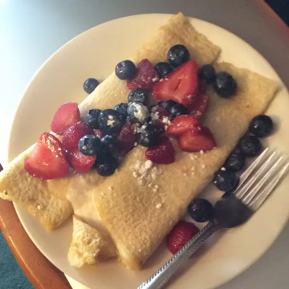

Breakfast Crepes

A quick and easy recipe for a delicious breakfast.
May be served with butter, sugar, jam, chocolate spread, or fresh fruit.
Ingredients
- 1 cup all purpose flour
- 1 cup milk
- 1 egg
- 1 pinch salt
Directions
- Whisk together flour, milk, egg, and salt in medium bowl
- Heat large frying pan on medium high heat
- Coat the surface of the pan with melted butter
- Pour quarter cup of batter into the pan and tilt the pan with a circular
motion so that batter coats the surface in a smooth and even layer.
- After two minutes, lift edge of crepe to see if browning
- If underside is browning, flip crepe to cook other side
- After two minutes, other side should also be browned
- Repeat steps to cook the remaining crepes
Back to Recipes